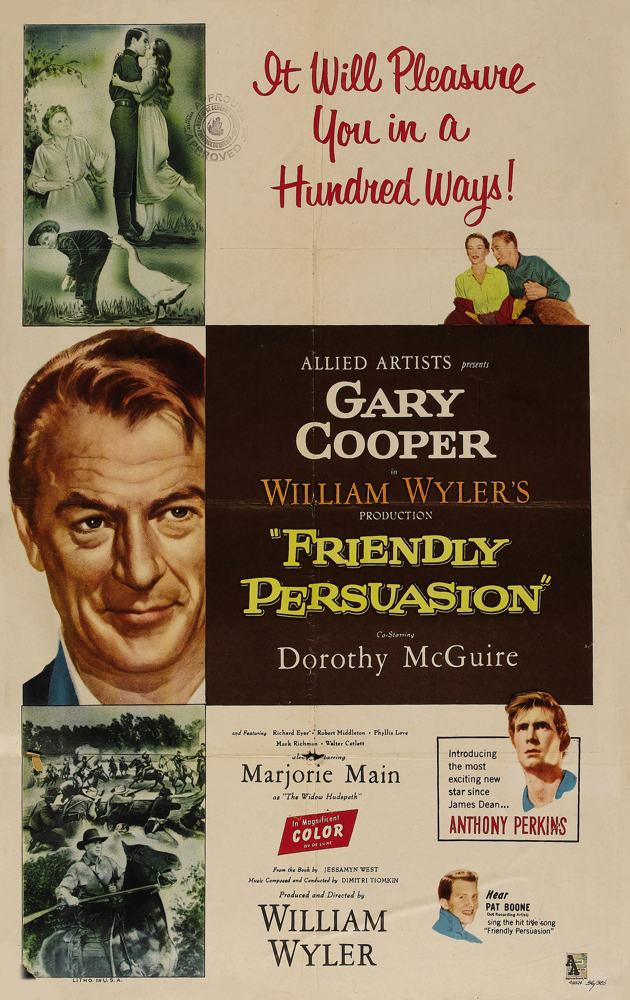

Friendly Persuasion
29th Academy Awards
(Oscars 1957)
6 Nominations, 0 Awards
| Nominations | ||
|---|---|---|
| Category | Nominees | Result |
| Best Motion Picture | William Wyler | Nominated |
| Actor in a Supporting Role | Anthony Perkins | Nominated |
| Directing | William Wyler | Nominated |
| Writing (Screenplay--Adapted) | Michael Wilson | Nominated |
| Sound Recording | Gordon R. Glennan and Gordon Sawyer | Nominated |
| Music (Song) "Friendly Persuasion (Thee I Love)" |
Dimitri Tiomkin and Paul Francis Webster | Nominated |